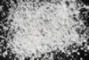

|
|
(For further information on spectroscopy, see:
http://speclab.cr.usgs.gov)
TITLE: Alunite HS295 DESCRIPT
DOCUMENTATION_FORMAT: MINERAL
SAMPLE_ID: HS295
MINERAL_TYPE: Sulfate
MINERAL: Alunite (Alunite group)
FORMULA: KAl3(SO4)2(OH)6
FORMULA_HTML: KAl3(SO4)2(OH)6
COLLECTION_LOCALITY: Utah
ORIGINAL_DONOR: Hunt and Salisbury Collection
CURRENT_SAMPLE_LOCATION: USGS Denver Spectroscopy Laboratory
ULTIMATE_SAMPLE_LOCATION: USGS Denver Spectroscopy Laboratory
SAMPLE_DESCRIPTION:
Original spectrum published in:
Hunt, G.R., J.W. Salisbury, and C.J. Lenhoff, 1971, Visible and near-infrared spectra of minerals and rocks: IV. Sulphide's and sulphate's. Modern Geology, vol. 3, pp 1-14.
With the following comment: "Alunite is white when pure. This particular sample is pink, presumably because of a small amount of iron which causes the fall-off in reflectivity toward the blue. No iron bands are seen in the near-infrared."
A spectrum for this sample is also published in:
Clark, R.N., T.V.V. King, M. Klejwa, G. Swayze, and N. Vergo, 1990, High spectral resolution reflectance spectroscopy of minerals: J. Geophys Res. 12653-12680.
The only sample measured was HS295.3B which was dry sieved to the grain size interval 74-250 µm.
IMAGE_OF_SAMPLE:

END_SAMPLE_DESCRIPTION.
XRD_ANALYSIS:
Analysis by Norma Vergo indicates pure Alunite
END_XRD_ANALYSIS.
COMPOSITIONAL_ANALYSIS_TYPE: XRF # XRF, EM(WDS), ICP(Trace), WChem
| COMPOSITION KEYWORD |
Oxide ASCII |
Amount | Weight Percent, % |
Oxide html |
|---|---|---|---|---|
| COMPOSITION: | SiO2 | 0.17 | wt% | SiO2 |
| COMPOSITION: | TiO2 | 0.02 | wt% | TiO2 |
| COMPOSITION: | Al2O3 | 35.6 | wt% | Al2O3 |
| COMPOSITION: | Fe2O3 | 0.14 | wt% | Fe2O3 |
| COMPOSITION: | MnO | 0.02 | wt% | MnO |
| COMPOSITION: | MgO | less than 0.1 | wt% | MgO |
| COMPOSITION: | CaO | less than 0.02 | wt% | CaO |
| COMPOSITION: | Na2O | 0.34 | wt% | Na2O |
| COMPOSITION: | K2O | 10.2 | wt% | K2O |
| COMPOSITION: | P2O5 | 0.75 | wt% | P2O5 |
| COMPOSITION: | LOI | 44.2 | wt% | LOI |
| COMPOSITION: | Total | 91.56 | wt% | |
| COMPOSITION: | O=Cl,F,S | wt% | ||
| COMPOSITION: | New Total | wt% |
COMPOSITION_TRACE: None
COMPOSITION_DISCUSSION:
XRF analysis by Foggert, Bartel, and Stewart USGS Branch of Analytic Chemistry, Denver from:
Salisbury, J. W., Walter, L. W., and Vergo, N., 1987, Mid-Infrared (2.1-25µm) Spectra of Minerals: First Edition, U.S. Geological Survey Open File Report 87-263.
Sulfur was not included in analysis and probably accounts for the missing 8%.
END_COMPOSITION_DISCUSSION.
MICROSCOPIC_EXAMINATION:
Salisbury, J. W., Walter, L. W., and Vergo, N., 1987, Mid-Infrared (2.1-25µm) Spectra of Minerals: First Edition, U.S. Geological Survey Open File Report 87-263.
This reference notes that the sample is slightly pink in color, appears pure.
avg. grain size = 300µm
Grains have straight extinction, length fast, uniaxial (+). G. Swayze
END_MICROSCOPIC_EXAMINATION.
SPECTROSCOPIC_DISCUSSION:
END_SPECTROSCOPIC_DISCUSSION.
SPECTRAL_PURITY: 1a2a3a4a # 1= 0.2-3, 2= 1.5-6, 3= 6-25, 4= 20-150 microns
| LIB_SPECTRA_HED: | where | Wave Range | Av_Rs_Pwr | Comment |
|---|---|---|---|---|
| LIB_SPECTRA: | splib04a r 251 | 0.2-3.0µm | 200 | g.s.= 300 µm |
| LIB_SPECTRA: | splib05a r 554 | 0.2-3.0µm | 200 | g.s.= 300 µm |
| LIB_SPECTRA: | splib05a r 577 | 0.3-2.5µm | 200 | g.s.= 300 µm |
| LIB_SPECTRA: | splib06a r 1388 | g.s.= | ||
| LIB_SPECTRA: | splib06a r 1411 | g.s.= | ||
| LIB_SPECTRA: | splib06a r 1425 | g.s.= |
{kind=link}